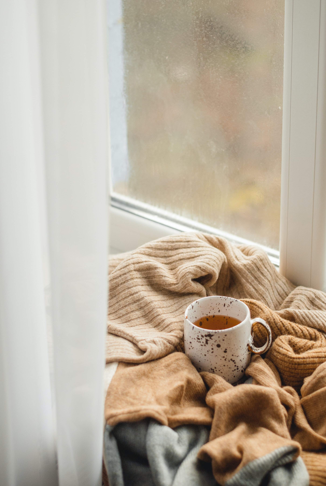

Life
Hi there! My name is Kaye Dante. I was born in the Philippines, grew up in Thailand, and now living in Perth and have been for the past 15 years. I am currently 33 years old, married to a musician and have two amazing kids.
Career
Currently working as a full-time retail buyer for Dymocks. I aspire to transition into the tech industry as a Front End Developer / Software Developer. Thankfully, for She Codes Australia, I got the opportunity to improve the skills I need to start a career in the tech in their She Codes Plus course.
Hobbies

I grew up a very artistic child and have dabbled in different freelance work throughout my years - graffiti-ing friend's sneakers, designing wedding invites, logos and did some calligraphy work for friends as well (I love typography, if you can't already tell). I've always wanted to give back to the world using my creative talents, so now I'm just expanding my creativity to the digital world.